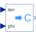

PolarToComplexConverts polar representation to complex |

|
Information
This information is part of the Modelica Standard Library maintained by the Modelica Association.
Converts the Real inputs len (length, absolute) and phi (angle, argument) to the Complex output y.
Connectors (3)
| y |
Type: ComplexOutput Description: Connector of Complex output signal |
|
|---|---|---|
| len |
Type: RealInput |
|
| phi |
Type: RealInput |
Used in Examples (4)
|
Modelica.ComplexBlocks.Examples Test the conversion blocks |
|
|
Modelica.Electrical.QuasiStationary.SinglePhase.Examples Series resonance circuit |
|
|
Modelica.Electrical.QuasiStationary.SinglePhase.Examples Parallel resonance circuit |
|
|
Modelica.Electrical.QuasiStationary.SinglePhase.Examples Example of transformer with short circuit impedance, transmission resistances and load |